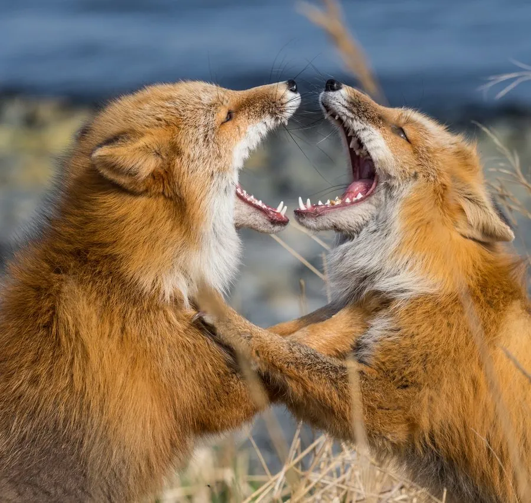

哺乳动物 · 动物界
赤狐 Vulpes vulpes

分布最广的食肉目动物之一，橙红色皮毛配大尾，听觉灵敏，能借地磁场判断扑击方向捕捉雪下鼠类。
- 分类
- 门脊索动物门纲哺乳纲目食肉目科犬科属狐属
- 栖息环境
- 苔原、森林、草原、农田与城市边缘，适应多种环境
- 地理分布
- 欧亚大陆、北美洲及北非，中国大部分地区有分布
- 保护级别
- IUCN 无危（LC）；中国国家二级保护动物
物种志
赤狐体长 0.6–0.8 米，尾长 0.3–0.5 米，体重 4–10 kg，体形纤细、吻尖耳大。被毛多为橙红至赤褐色，腹部和尾尖为白色，尾毛蓬松粗大，在跳跃时帮助平衡，休息时可裹住身体保暖。
赤狐的适应能力在食肉目中数一数二，从苔原、森林、草原到城市边缘都能生存，食谱包括鼠类、野兔、鸟类、昆虫、浆果甚至人类丢弃的食物。它多在黄昏和夜间单独觅食，听觉可定位雪层下活动的田鼠，并能借地磁场判断扑击角度。每年 1–3 月繁殖，妊娠期约 50 天，每胎 4–6 仔，由双亲共同抚养。赤狐全球种群稳定，但城市化和狂犬病防控曾使局部数量波动。
形态与习性
- 食性鼠类、野兔、鸟类、昆虫与浆果，机会主义取食
- 体长0.6–0.8 m，尾长 0.3–0.5 m
- 体重4–10 kg
- 寿命野外约 3–6 年，圈养可达 12 年
- 繁殖1–3 月发情，妊娠期约 50 天，每胎 4–6 仔
- 活动节律黄昏和夜间单独活动
趣味知识
- 赤狐能利用地磁场判断扑击方向，提高捕捉雪下猎物的成功率。
- 大尾巴在跳跃时保持平衡，睡觉时还能裹住身体保暖。
- 赤狐的听觉极其灵敏，可听到雪层下田鼠活动的细微声响。
- 赤狐是分布最广的野生食肉目动物之一，几乎遍布北半球。